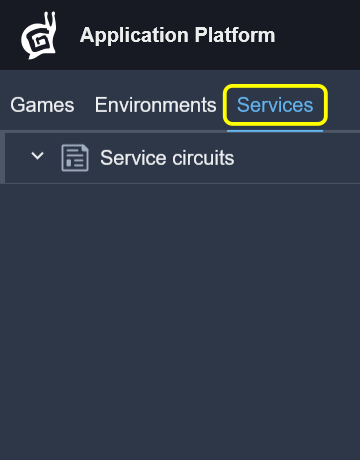
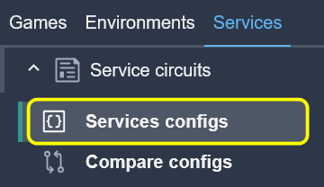
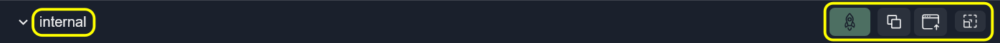
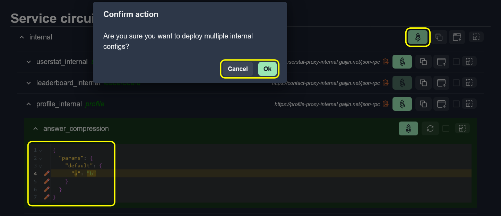
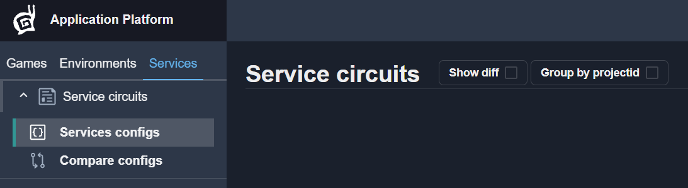
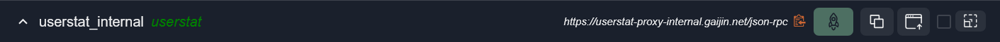
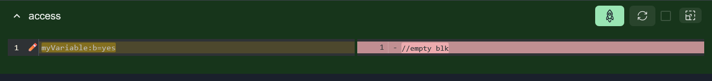
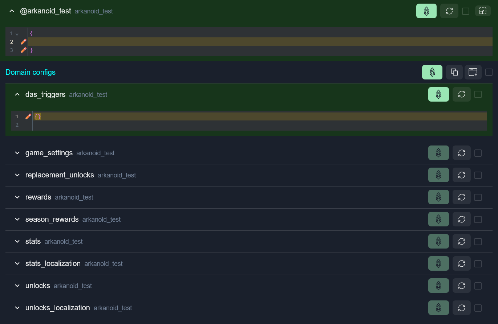
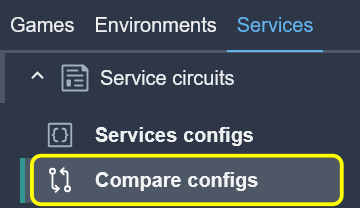

Workspaces: Services
The Services workspace is designed for working with service configurations across different deployment environments, called circuits. This workspace provides tools for editing, comparing, copying, and deploying configurations, as well as tracking configuration changes at different levels.
Service Circuits
Service circuits is a tab for managing and comparing service configurations across different deployment environments (circuits).
{kind=link}

Each circuit represents a deployment environment containing multiple services with their configurations.
The Service circuits tab contains sub-tabs:
Services configs – Main interface for viewing, editing and deploying service configurations
Compare configs – Tool for comparing configurations between different circuits
Services Configs
Services configs is the main interface for working with service configurations.
{kind=link}

The Services configs interface displays a hierarchical structure:
Circuits – Top level deployment environments
Services – Individual services within each circuit
Configs – Configuration files for each service
Main Features
View and edit service configurations across different circuits
Deploy configuration changes to services
Copy and paste configurations between services
Compare configuration differences (diff view)
Circuit Management
View Circuit
Each circuit is displayed as an accordion item with:
Circuit name with color-coded background (production circuits have a distinct color)
Deploy button – Deploys all changed configurations in the circuit
Copy/Upload buttons – Bulk configuration operations
Fullscreen button – Expands the circuit to fullscreen mode for easier viewing and editing
{kind=link}

Deploy Circuit Configs
To deploy all changed configurations across all services in a circuit:
Make changes to one or more configurations in any services.
Click the Deploy button.
Confirm the deployment action.
For production circuits, you will need to type a confirmation phrase to prevent accidental changes.
{kind=link}

View Options
At the top of the Services configs, there are two view options available as checkboxes that control how configurations are displayed: Show diff and Group by projectid.
{kind=link}

Show Diff
Toggle the Show diff option to enable side-by-side comparison view:
Shows the original (deployed) version on the left
Shows your current changes on the right
Highlights additions, deletions, and modifications
Group by ProjectID
Toggle Group by projectid to organize configurations:
When enabled: Configurations are sorted alphabetically by their project ID
When disabled: Configurations are sorted alphabetically by name
This helps when working with multiple projects within the same service.
Service Management
View Service
Each service within a circuit displays:
Service ID – Unique identifier for the service
Service Type – Type of service (shown in green italics)
Service URL – Endpoint URL with copy button. Click the copy icon to copy URL to clipboard
Deploy button – Deploys all changed configs for this service
Copy/Upload buttons – Copy selected configs to clipboard or upload new config data
Select All checkbox – Select/deselect all configurations in the service. Selected configurations can be bulk copied
Fullscreen button – Expands the service to fullscreen mode
{kind=link}

Configuration Management
View Configurations
Each configuration displays:
Config name – Name of the configuration file
Project ID – Associated project identifier (if applicable)
Status indicator – Green background indicates unsaved changes
Deploy button – Deploy this specific config
Refresh button – Discard local changes and reload config from server
Checkbox – Select config for bulk copy/paste operations
Fullscreen button – Expands the config editor to fullscreen mode
Code editor – Built-in editor with syntax highlighting, automatic formatting, error detection and change indicators
Edit Configurations
Expand the configuration accordion item to view/edit
Configurations are loaded automatically when expanded or selected
Edit the content in the Code editor
Click Deploy button to save changes to the server
{kind=link}

Note
Changes are stored locally until deployed. Page refresh may lose unsaved changes.
Domain Configurations
Some configurations have domain-specific sub-configurations (domain configs):
Displayed as nested items under the main configuration
Each domain config can be edited independently
Root config and domain configs can be deployed separately
{kind=link}

Copy and Upload Operations
{kind=link}
Copy and Upload operations allow transferring configurations between services and circuits.
When uploading configurations, paste them at the same hierarchy level where they were copied from, using the Upload button next to the Copy button. For example:
Configs copied from a service must be uploaded to a service
Configs copied from a circuit must be uploaded to a circuit
You cannot copy from service level and upload to circuit level
Copy Configurations
Select configurations using checkboxes or Select all button
Click the Copy button
Selected configs are copied to clipboard in JSON format
Upload Configurations
Navigate to the same hierarchy level where the configs were copied from
Click the Upload button
Paste JSON data containing configurations
Confirm the upload
Matching configurations will be updated with the new content
Example:
{
"configName1": {
"content": "config content...",
"domainConfigs": {
"domain1": "domain config content..."
}
},
"configName2": {
"content": "config content..."
}
}
Note
Uploaded configurations are not automatically deployed. You must deploy them after upload.
Changes Management
Status Indicators
Green background – Configuration has unsaved changes
Standard background – Configuration matches deployed version
Track Changes
The system tracks:
Which configurations have been modified
Which configurations are selected for operations
Open/closed state of accordions (persisted across sessions)
Deploy Changes
You can deploy changes at three levels:
Circuit level – Deploys all changed configs across all services
Service level – Deploys all changed configs for one service
Config level – Deploys a single configuration
Error Display
Errors may occur during:
Configuration loading
Configuration deployment
Domain config retrieval
Errors are displayed:
In error messages at the configuration level
In console at the bottom of the page
In deployment result notifications
As validation markers in the Code editor
Compare Configs
Compare configs tool compares service configurations between different circuits (deployment environments).
{kind=link}

The interface works as described in How Comparison Works, where:
Items to compare: Circuits
Grouped by type: Service type
Elements: Service configurations
Tip
For deployment operations, use the Services configs tab.